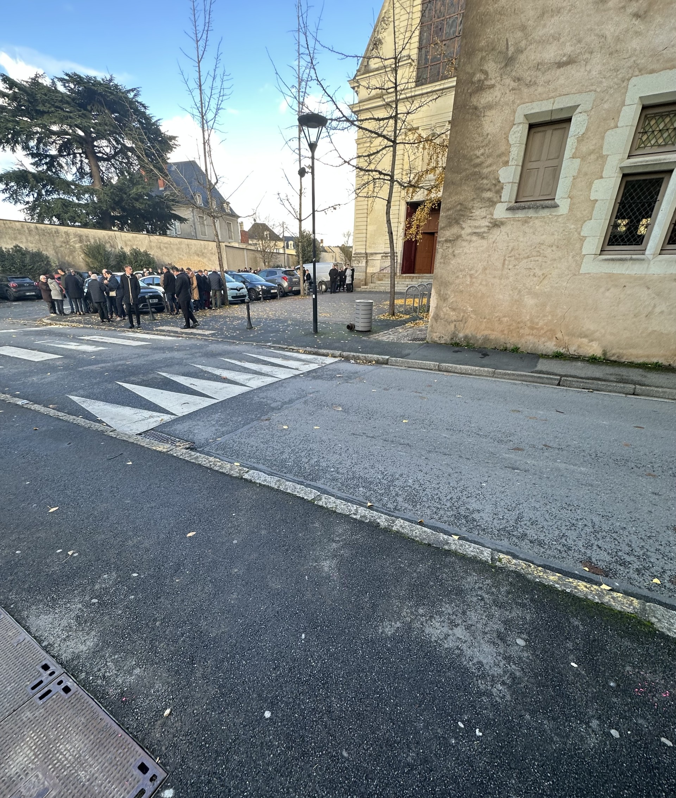
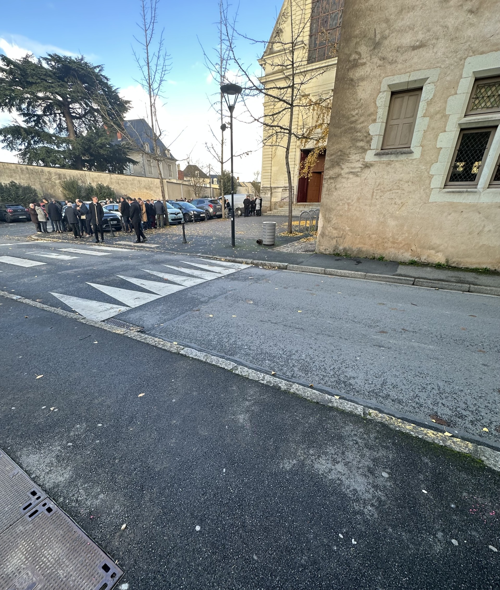

À Propos de la Fibre Optique
La fibre optique est une technologie de transmission de données qui utilise des fils de verre pour transmettre des informations sous forme de lumière. Cela permet des connexions Internet ultra-rapides et fiables, idéales pour les foyers et les entreprises.
Les Avantages de la Fibre Optique
- Connectivité ultra-rapide
- Résistance aux interférences
- Large bande passante
- Coupures de signal minimales
Nos Services
- Installation de la fibre optique dans les maisons et les entreprises
- Vérification et amélioration de la connexion existante
- Maintenance et dépannage des installations de fibre optique
- Conseils personnalisés sur le choix d'une offre adaptée à vos besoins
Témoignages de Clients
"L'installation de la fibre optique a transformé notre connexion Internet. C'est tellement plus rapide!" - Claire T.
"Une équipe professionnelle et sympathique. Je recommande vivement !" - Jean-Pierre M.
Galerie

 

FAQ
Qu'est-ce que la fibre optique ?
La fibre optique est un moyen de transmettre des données à très haute vitesse grâce à des fils de verre qui transmettent la lumière.
Quels sont les avantages de la fibre optique par rapport au cuivre ?
La fibre optique offre une meilleure bande passante, une plus grande vitesse de connexion et une meilleure résistance aux interférences.